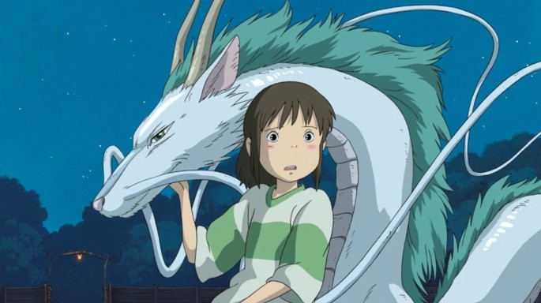

Studio Ghibli es un estudio de animación japonés fundado en 1985 por Hayao Miyazaki, Isao Takahata y Toshio Suzuki. Es considerado uno de los mejores estudios de animación en el mundo y ha producido una gran cantidad de largometrajes animados aclamados por la crítica que han obtenido numerosos premios e incluso algunas de sus entregas han sido nominadas a los Óscars.
Desde su fundación, Studio Ghibli ha producido un total de 22 películas, cada una con su propia historia y estilo visual. Entre ellas se encuentran clásicos como Mi Vecino Totoro, El Castillo en el Cielo, La Princesa Mononoke y muchas más. Sin embargo, la película más famosa del estudio es El Viaje de Chihiro, la cual ganó el premio a la Mejor Película de Animación en los Premios de la Academia en 2008.


¿De qué va?: Mientras la vida en el mundo se encuentra amenazada por el Mar de Putrefacción, la joven Nausicaä deberá lidiar con las fuerzas que quieren hacerse con el Valle del Viento, uno de los pocos lugares todavía libres de este mal.
¿De qué va?: Sheeta y Pazu son perseguidos por dos fuerzas distintas: las tropas de Muska y los piratas de Dola. El objetivo de ambas es encontrar un castillo que, según las leyendas, flota en el cielo: Laputa (sí lo has leído bien).
¿De qué va?: Los hermanos Seita y Setsuko luchan por sobrevivir durante la Segunda Guerra Mundial, y descubren de primera mano lo cruel que es el mundo en ese contexto.
¿De qué va?: Las hermanas Mei y Satsuki se instalan con su padre en un nuevo hogar. Por la zona conocen a Totoro, un misterioso y divertido espíritu.
¿De qué va?: La joven Nicky abandona el hogar de su familia para formarse como bruja. En esta aventura, tendrá que hacer frente a un montón de problemas, tanto externos como internos.
¿De qué va?: Taeko se toma unas vacaciones de su trabajo para ir a un pueblo a ayudar en el campo. De forma involuntaria, durante el viaje no paran de volverle recuerdos de su niñez.
¿De qué va?: Un hombre-cerdo conocido como Porco vive en el Mar Adriático, y lo sobrevuela con su avioneta. Su pasión por la aviación le llevará a conocer tanto a amigos como a enemigos.
¿De qué va?: Morisaki es un estudiante que tiene una gran amistad con Matsuno. Un día, ambos conocen a una nueva estudiante, Rikako, que no les deja indiferentes.
¿De qué va?: Los mapaches de una colina de Tama usan sus poderes para evitar que el descontrolado avance de los humanos destruya su hogar.
¿De qué va?: Shizuku no sabe muy bien qué quiere hacer cuando sea mayor. Al conocer a Seiji, que lo tiene muy claro, experimentará un gran crecimiento personal.
¿De qué va?: Ashitaka vaga por el mundo y llega a la Ciudad del Hierro, que pretende crecer aún a costa de los recursos naturales de la zona. San y su familia de lobos no van a permitírselo.
¿De qué va?: La película nos cuenta distintas historias de la familia Yamada, en las que sobresalen el enorme carisma de sus miembros y un gran sentido del humor.
¿De qué va?: La joven Chihiro llega por accidente a un balneario regentado y visitado por criaturas de lo más extrañas. Su objetivo es volver a su mundo y rescatar a sus padres, que han sido convertidos en cerdos
¿De qué va?: La joven Sophie es convertida en anciana por una malvada bruja. Esto la lleva hasta el mágico castillo de Howl, que se mueve gracias a una llama parlante.
¿De qué va?: El mago Gavilán conoce al joven Arren, y deciden viajar juntos. Ambos pasan una temporada en casa de Tenar y Therru, aunque la sombra del malvado Cob planea sobre ellos.
¿De qué va?: La niña-pez Ponyo conoce un día a Sosuke. Desde ese momento, deciden estar juntos, aunque el padre de la pececita intentará impedirlo
¿De qué va?: Tras ayudar a un gato en la calle, Haru es recompensada por los felinos y llevada a su reino.
¿De qué va?: Historia protagonizada por los jóvenes Umi y Shun, cuyos vínculos se van estrechando a la vez que intentan que no se derribe el edificio de su instituto que alberga todos los clubs.
¿De qué va?: La cinta nos cuenta la vida de Jiro Horikoshi, que pasó de ser un niño que soñaba con construir aviones a un adulto que trabaja en ello
¿De qué va?: La pequeña Brote de Bambú vive feliz en un bosque junto a sus padres y amigos. Un día, gracias al mucho dinero que han conseguido, deciden trasladarse a la ciudad y la niña se convierte en la princesa Kaguya, algo a lo que la joven no termina de adaptarse.
¿De qué va?: Una joven enferma y llena de complejos llamada Anna es enviada una temporada a un tranquilo y precioso pueblo. Allí, conocerá a la que se convertirá en su primera gran amistad: Marnie.
info@studioghiblimovies.com